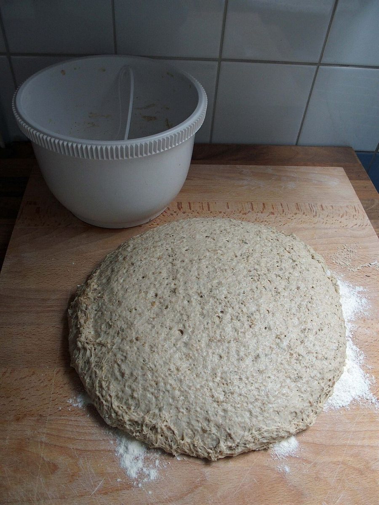
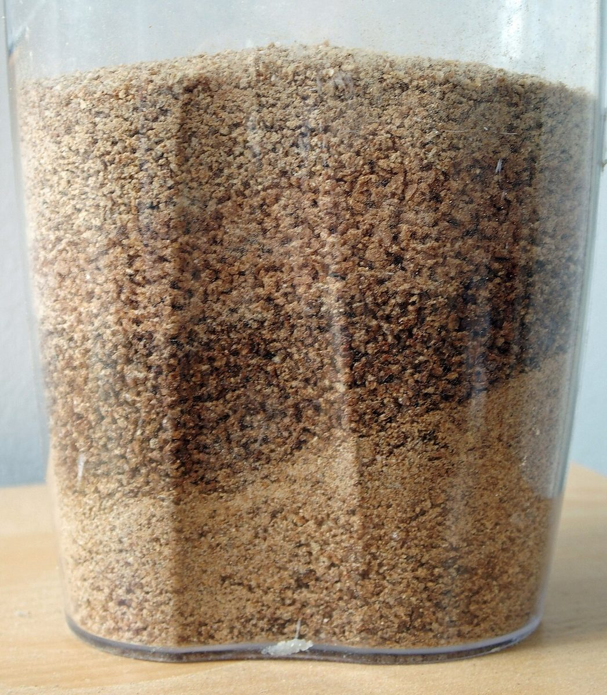

回路 2
店のこと
店のこと
お店について確認できているのは、所在地・電話番号・Instagramのアカウントです。
確認済み
確認できていること
- 店名は「なかむらベーカリー」、業種はベーカリー
- 所在地は岡山県笠岡市二番町2-11(〒714-0083)
- 電話番号は0865-62-2051
- Instagramのアカウントは @nakamura.bakery
- 営業時間・定休日・メニュー・価格・ご予約・駐車場は準備中

想像
想像してみる(創作)
この部分は、制作側が想像して書いたものです。お店の実際の様子・考え・メニューとは関係がありません。
ベーカリーと聞くと、粉や生地、道具といった身近なものが思い浮かびます。ここに並べた写真は、そうしたもののイメージです。お店の実際の道具や商品とは関係がありません。


